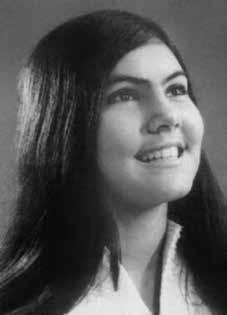

Nilda
Carvalho
Cunha
CIRCUNSTÂNCIAS DA MORTE
Nilda Carvalho Cunha morreu no dia 14 de novembro de 1971. Na madrugada do dia 19 para 20 de agosto de 1971, Nilda Carvalho Cunha foi presa em sua casa em um cerco realizado no local para prender Iara Iavelberg. A conduta fez parte da Operação Pajussara, montada pelo major Nilton de Albuquerque Cerqueira, chefe da 2ª Seção do Estado-Maior da 6ª Região Militar e comandante do DOI-CODI de Salvador, para “capturar ou eliminar” Carlos Lamarca.
A prisão de Nilda foi comprovada pelo Relatório da Operação Pajussara, documento produzido pela 2a seção do IV Exército, que também afirma que a Justiça Militar não expediu mandado de prisão contra ela. Todos os indícios nos levam a concluir que Nilda não era conhecida pelos órgãos de informações, isto é, foi presa apenas por estar no mesmo local onde se encontrava Iara Iavelberg.
Inicialmente, ela foi levada para o quartel do Barbalho e, em seguida, foi transferida para a Base Aérea de Salvador, ficando incomunicável. Ela foi libertada dois meses mais tarde, muito fragilizada em decorrência das bárbaras torturas físicas e psicológicas a que havia sido submetida, além de ter presenciado os maus-tratos sofridos por seu namorado, Jaileno Sampaio.
No início de novembro de 1971, foi ao quartel-general com sua mãe, Esmeraldina Carvalho Cunha, visitar Jaileno, contudo, não obteve autorização para vê-lo. Ao sair do local, sentiu-se mal e percebeu que estava perdendo a visão e tinha dificuldades para respirar. A partir desse momento, passou a ter uma série de sintomas de desequilíbrio mental provocado pelas intensas torturas que havia sido vítima. Tinha alucinações, crises de imensa tristeza, momentos de perda de visão repentina, desmaios e forte insônia. Até que o psiquiatra Eduardo Saback recomendou que fosse internada para ser submetida a um tratamento de sonoterapia.
No mesmo dia em que chegou à Clínica Amepe, em 4 de novembro de 1971, recebeu a visita do major Nilton de Albuquerque Cerqueira, que ameaçou prendê-la novamente. Após esse episódio, o estado de Nilda piorou sensivelmente. Assim, o médico responsável recomendou que ela fosse transferida para um hospital, tendo sido levada para o Sanatório Bahia.
Alguns dias mais tarde, em 14 de novembro, Nilda morreu, surpreendendo a todos, já que seu estado de saúde havia melhorado consideravelmente. O atestado de óbito apresentou como causa da morte “edema cerebral a esclarecer”. No entanto, a família suspeita que um envenenamento possa ter ocasionado a sua morte em razão do estado de saúde instável que Nilda vinha apresentando antes do falecimento.
Diante dessas circunstâncias, seu corpo foi enviado ao Instituto Médico Legal Nina Rodrigues que, no entanto, não entregou para a família o laudo da necropsia. O corpo de Nilda foi enterrado por sua família no cemitério Quinta dos Lázaros, em Salvador (BA).
Nilda Carvalho Cunha died on November 14, 1971. In the early hours of August 19 to 20, 1971, Nilda Carvalho Cunha was arrested in her home in a siege carried out there to arrest Iara Iavelberg. The conduct was part of Operation Pajussara, mounted by Major Nilton de Albuquerque Cerqueira, head of the 2nd Section of the General Staff of the 6th Military Region and commander of DOI-CODI in Salvador, to “capture or eliminate” Carlos Lamarca.
Nilda's arrest was proven by the Operation Pajussara Report, a document produced by the 2nd section of the IV Army, which also states that the Military Court did not issue an arrest warrant against her. All the evidence leads us to conclude that Nilda was not known to the intelligence agencies, that is, she was arrested just because she was in the same place as Iara Iavelberg.
Initially, she was taken to the Barbalho barracks and then transferred to the Salvador Air Base, remaining incommunicado. She was released two months later, very weakened as a result of the barbaric physical and psychological torture to which she had been subjected, in addition to having witnessed the mistreatment suffered by her boyfriend, Jaileno Sampaio.
At the beginning of November 1971, he went to the headquarters with his mother, Esmeraldina Carvalho Cunha, to visit Jaileno, however, he was not authorized to see him. When leaving the place, he felt unwell and realized that he was losing his vision and had difficulty breathing. From that moment on, he started to have a series of symptoms of mental imbalance caused by the intense torture he had suffered. I had hallucinations, bouts of immense sadness, moments of sudden loss of vision, fainting and severe insomnia. Until psychiatrist Eduardo Saback recommended that she be hospitalized to undergo sleep therapy treatment.
On the same day she arrived at the Amepe Clinic, on November 4, 1971, she received a visit from Major Nilton de Albuquerque Cerqueira, who threatened to arrest her again. After this episode, Nilda's condition worsened significantly. Therefore, the doctor in charge recommended that she be transferred to a hospital, and she was taken to the Bahia Sanatorium.
A few days later, on November 14, Nilda died, surprising everyone, as her health had improved considerably. The death certificate stated the cause of death as “cerebral edema to be clarified”. However, the family suspects that poisoning may have caused her death due to Nilda's unstable health condition before her death.
Given these circumstances, his body was sent to the Nina Rodrigues Legal Medical Institute, which, however, did not provide the autopsy report to the family. Nilda's body was buried by her family in the Quinta dos Lázaros cemetery, in Salvador (BA).
Nilda Carvalho Cunha murió el 14 de noviembre de 1971. En la madrugada del 19 al 20 de agosto de 1971, Nilda Carvalho Cunha fue detenida en su casa en un asedio realizado allí para arrestar a Iara Iavelberg. La conducta formó parte de la Operación Pajussara, montada por el Mayor Nilton de Albuquerque Cerqueira, jefe de la 2.ª Sección del Estado Mayor de la 6.ª Región Militar y comandante del DOI-CODI en Salvador, para “capturar o eliminar” a Carlos Lamarca.
La detención de Nilda quedó acreditada por el Informe Operación Pajussara, documento elaborado por la 2.ª sección del IV Ejército, en el que también se señala que el Tribunal Militar no giró orden de aprehensión en su contra. Todas las pruebas nos llevan a concluir que Nilda no era conocida por los servicios de inteligencia, es decir, fue arrestada simplemente porque se encontraba en el mismo lugar que Iara Iavelberg.
Inicialmente fue trasladada al cuartel de Barbalho y luego trasladada a la Base Aérea de Salvador, permaneciendo incomunicada. Fue liberada dos meses después, muy debilitada a consecuencia de las bárbaras torturas físicas y psicológicas a las que había sido sometida, además de haber presenciado los malos tratos sufridos por su novio, Jaileno Sampaio.
A principios de noviembre de 1971 acudió a la sede con su madre, Esmeraldina Carvalho Cunha, para visitar a Jaileno, sin embargo, no fue autorizado a verlo. Al salir del lugar se sintió mal y se dio cuenta que estaba perdiendo la visión y tenía dificultad para respirar. A partir de ese momento comenzó a tener una serie de síntomas de desequilibrio mental provocados por las intensas torturas que había sufrido. Tuve alucinaciones, ataques de inmensa tristeza, momentos de pérdida repentina de la visión, desmayos e insomnio severo. Hasta que el psiquiatra Eduardo Saback recomendó internarla para realizar un tratamiento de terapia del sueño.
El mismo día de su llegada a la Clínica Amepe, el 4 de noviembre de 1971, recibió la visita del mayor Nilton de Albuquerque Cerqueira, quien la amenazó con arrestarla nuevamente. Después de este episodio, el estado de Nilda empeoró significativamente. Por lo que el médico a cargo recomendó su traslado a un hospital y fue trasladada al Sanatorio de Bahía.
Unos días después, el 14 de noviembre, Nilda falleció sorprendiendo a todos, pues su salud había mejorado considerablemente. El certificado de defunción indicaba que la causa de la muerte era “edema cerebral por aclarar”. Sin embargo, la familia sospecha que el envenenamiento pudo haber causado su muerte debido al inestable estado de salud de Nilda antes de su muerte.
Ante estas circunstancias, su cuerpo fue enviado al Instituto Médico Legal Nina Rodrigues, que, sin embargo, no entregó el informe de la autopsia a la familia. El cuerpo de Nilda fue enterrado por su familia en el cementerio Quinta dos Lázaros, en Salvador (BA).